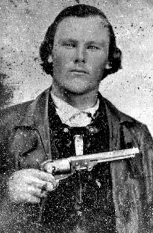

|

NAME: Wenzel Ernst
BORN: 1839
DIED: 1863
ALLEGIANCE: Confederate
HIGHEST RANK: Private
UNIT: 30th Texas Cavalry, 1st Texas Partisan Rangers
RECORD: Enlisted in the 30th Texas Cavalry, Company
E, on July 12, 1862, at Camp McCulloch near Buchanan, Texas.
Patrolled the plains of Texas and the nearby Indian
Territory for a year. Grew ill while serving near the
Arkansas border in the summer of 1863. Died in late August
or September.
|
|
The decision was inescapable: sooner or later, each Southern
man had to choose between the Union and his state. Recent
immigrants tended to side with the Union rather than forsake
their newly adopted country But Wenzel Ernst, a native of
Germany, was one of the minority who chose state over
country.
On July 12, 1862, 23-year-old Ernst mounted up and rode from
his farm near Meridian, Texas--leaving behind his wife,
Mary, and five-month-old daughter, Matilda--for Camp
McCulloch, near Buchanan, about 30 miles to the north.
There, he enlisted in the 30th Texas Cavalry, also known as
the 1st Texas Partisan Rangers, and was assigned to Company
E. This photo was taken in late 1862 in Palo Pinto County,
north-central Texas. He is holding an 1844 Colt revolver and
wearing a leather coat over his Sunday vest. Ernst's
enlistment papers alternately misprinted his surname as
"Earnst" and "Earnest," but Ernst apparently never bothered
to have them corrected. Like many immigrants, he could
neither read nor write English, and he signed his papers
simply with an 'X'.
Assigned to the District of Texas, New Mexico, and Arizona,
the 30th Texas Cavalry was sent out to patrol the wheat
fields of northeastern Texas and the Indian Territory
(present-day Oklahoma). In early August 1863, Major General
John B. Magruder, commander of the district, ordered the
regiment to Fort Smith in east central Arkansas, because
"more danger of an invasion lay in that quarter."
Ernst never reached Arkansas. As the men of the 30th
approached the border, Ernst became gravely ill. His
condition worsened rapidly, and he died sometime in late
August or early September. Records do not name his illness
or specify his date of death. They show only that he
received his final pay on June 30. Ernst's body was never
sent home, He was probably buried in an unmarked grave
somewhere in northeastern Texas.
Ernst's widow later remarried, but received an unusual
reminder of her first husband toward the turn of the
century: a check arrived from the U.S. government in payment
for Ernst's military service. Even today, his descendants do
not know why a Federal check was sent to a Confederate
widow, and 30 years after the war.
Source: Civil War Times Illustrated
38:1 (March 1999), 80.
|